Gray's Colors of Skull Anatomy
A series of vertebrate skulls with a consistent color scheme. When applied, the color scheme is designed to be color-blind friendly and for easy differentiation between elements. Skulls were segmented from CT scans using various 3D processing software (Avizo, VG Studio, and 3D Slicer. See individual models for details) and edited/colored using Blender.
-
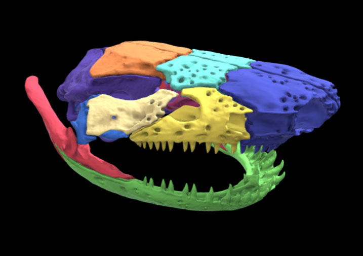
Caecilian
Typhlonectes natans
3D model
UF:herp:192402 -
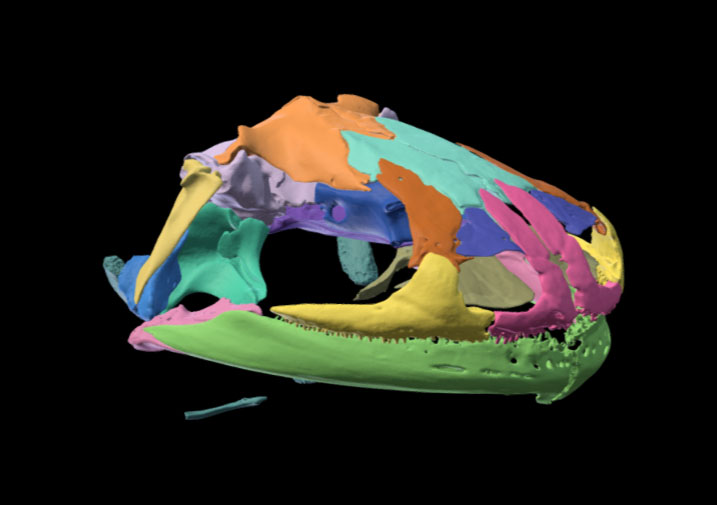
Spotted salamander
Ambystoma maculatum
3D model
UF:herp:26607 -
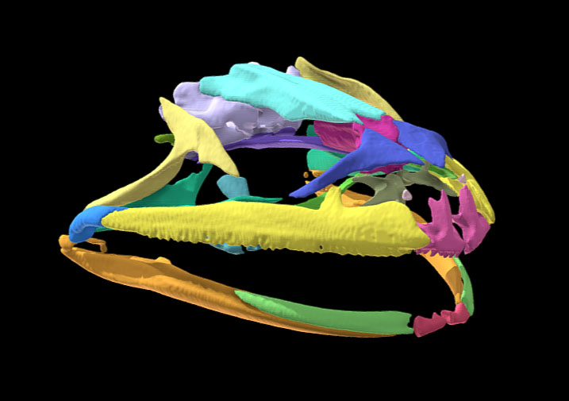
American bullfrog
Rana catesbeiana
3D model
UF:herp:111243 -
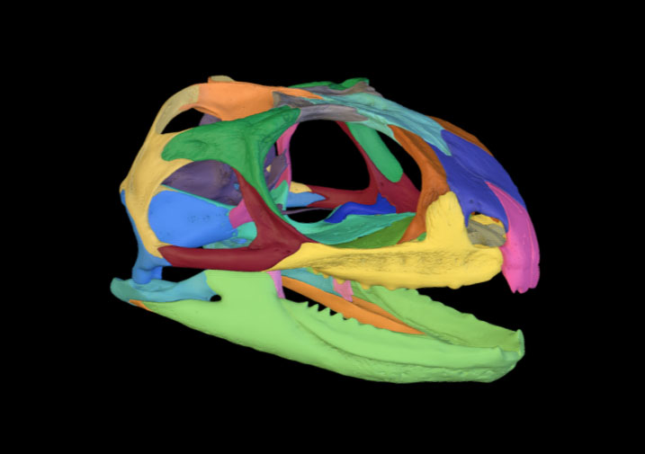
Tuatara
Sphenodon punctatus
3D model
UF:herp:11978 -
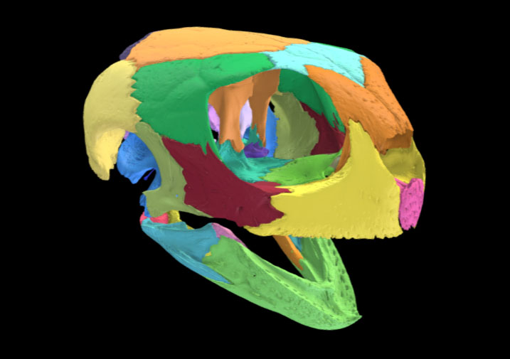
Green sea turtle
Chelonia mydas
3D model
UF:herp:51413 -
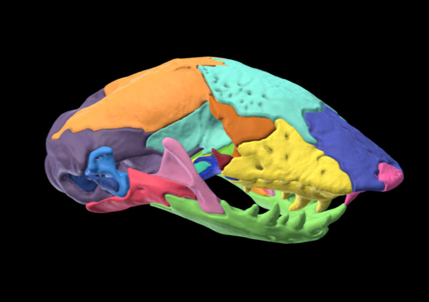
Florida worm lizard
Rhineura floridana
3D model
UF:herp:121174 -
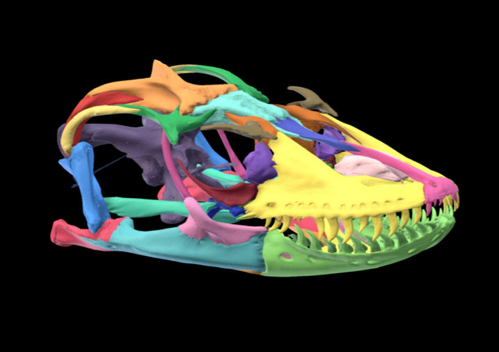
Komodo dragon
Varanus komodoensis
3D model
tnhc:herpetology:95803 -
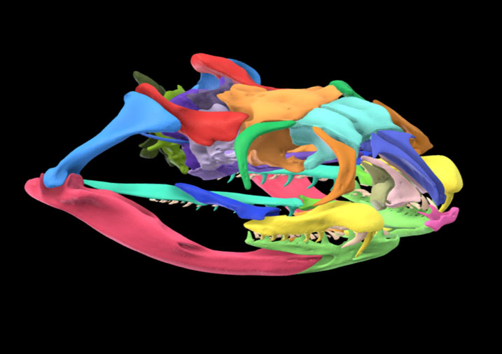
Olive sea snake
Aipysurus laevis
3D model
KLS:0564 -
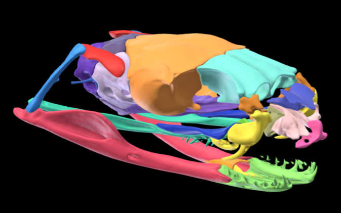
Mexican small headed rattlesnake
Crotalus intermedius
3D model
UF:herp:52552 -
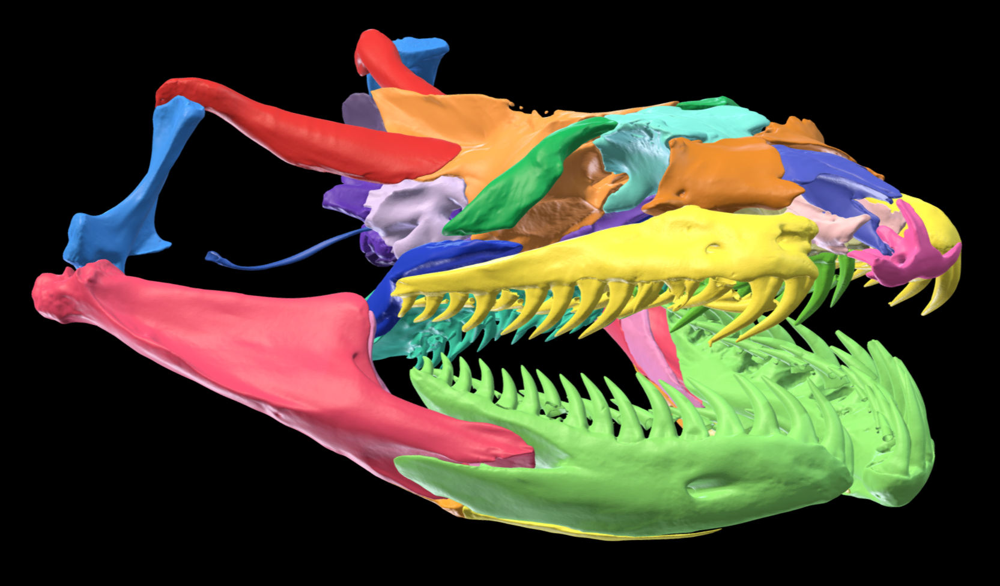
Green anaconda
Eunectes murinus
3D model
UF:herp:84822 -
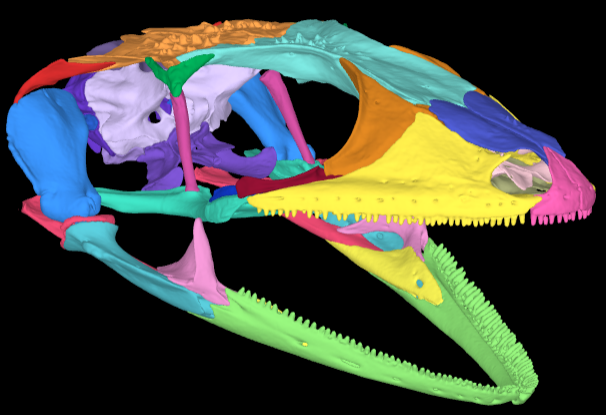
Leaf tailed gecko
Phyllurus platurus
3D model
UF:herp:126970 -
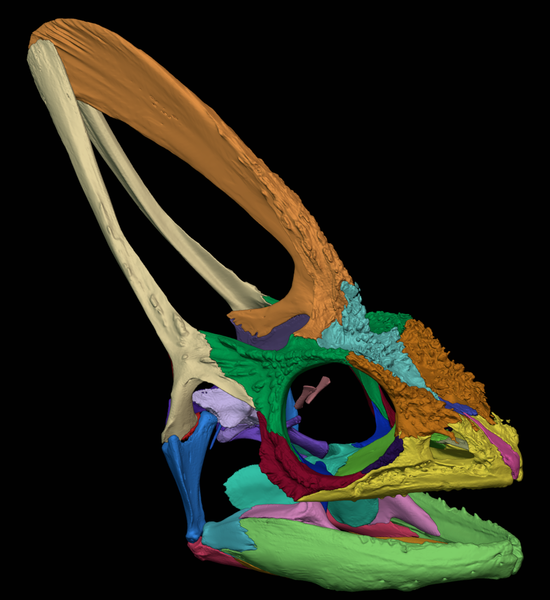
Veiled chameleon
Chamaeleo calyptratus
3D model
UF:herp:191369
Color scheme
Use the hex codes in the table to apply to color scheme to your own models!
| Region | Element | UBERON ID & link | Color | Hex code |
|---|---|---|---|---|
| Cranium | Ectopterygoid | UBERON:0011634 | Electric blue | #1039cc |
| Cranium | Frontal | UBERON:0000209 | Sky blue | #7de8e1 |
| Cranium | Jugal | UBERON:0001683 | Maroon | #901031 |
| Cranium | Lacrimal | UBERON:0001680 | Dark purple | #32195B |
| Cranium | Maxilla | UBERON:0002397 | Yellow | #ffed4c |
| Cranium | Nasal | UBERON:0001681 | Purplish blue | #4e5bcf |
| Cranium | Palatine | UBERON:0001682 | Lime green | #74d945 |
| Cranium | Parietal | UBERON:0000210 | Light orange | #ffa44f |
| Cranium | Postorbital | UBERON:0011169 | Forest green | #00B35C |
| Cranium | Prefrontal | UBERON:0010750 | Burnt orange | #d98321 |
| Cranium | Premaxilla | UBERON:0002244 | Barbie pink | #ff66b8 |
| Cranium | Pterygoid | UBERON:0010389 | Light teal | #3ddbbe |
| Cranium | Quadrate | UBERON:0006597 | Powder blue | #3a95fc |
| Cranium | Septomaxilla | UBERON:0011167 | Light pink | #ffcfda |
| Cranium | Squamosal | UBERON:0001695 | Cream | #ffecb3 |
| Cranium | Supratemporal | UBERON:0011629 | Red | #db2e2e |
| Cranium | Vomer | UBERON:0002396 | Light greenish brown | #a7ab79 |
| Braincase | Basioccipital | UBERON:0001692 | Light purple | #A086D7 |
| Braincase | Basisphenoid | UBERON:0006428 | Octopus | #7852cc |
| Braincase | Opisthotic | UBERON:0010910 | Lavender | #D59BFF |
| Braincase | Otoccipital | UBERON:3000368 | Violet | #6538c7 |
| Braincase | Prootic | UBERON:0004746 | Lilac | #dac9ff |
| Braincase | Sphenethmoid/Epitpterygoid | UBERON:3000572 | Fuchsia | #CC2996 |
| Braincase | Stapes | UBERON:0001687 | Dark blue | #295fcc |
| Braincase | Supraoccipital | UBERON:0004747 | Purple gray | #67578a |
| Lower jaw | Angular | UBERON:0011079 | Orange | #faaa32 |
| Lower jaw | Articular | UBERON:2001805 | Reddish pink | #f04d73 |
| Lower jaw | Coronoid | UBERON:0011598 | Baby pink | #ec94d0 |
| Lower jaw | Dentary | UBERON:0004742 | Light green | #91eb78 |
| Lower jaw | Splenial | UBERON:0011635 | Pale yellow | #fff957 |
| Lower jaw | Surangular | UBERON:0011636 | Teal | #57c5d3 |